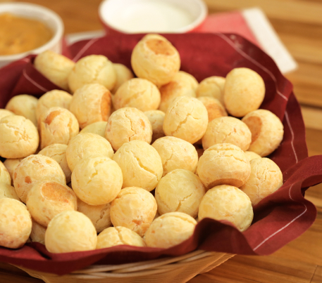
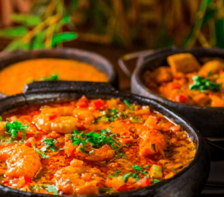
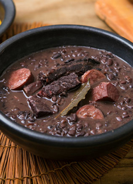
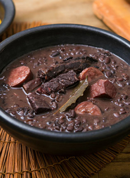
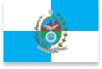
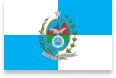

Quem somos?
Vários Sabores Brasil é uma galeria de
restaurantes de comidas típicas
brasileiras.
Temos vários
restaurantes com chefes especializados
em comidas típicas do Brasil.
Nós alugamos os espaços,
fornecemos infraestrutura,
estacionamento e um hotel anexo.
Bem-vindo a página Vários Sabores
Brasil: Sudeste!
Uma apresentação dos melhores pratos
regionais presentes em nossa galeria.


 


 

Conheça o nosso
espaço!
Rua Rio de Janeiro, 1500, Centro- RJ
(21) 4002-8922